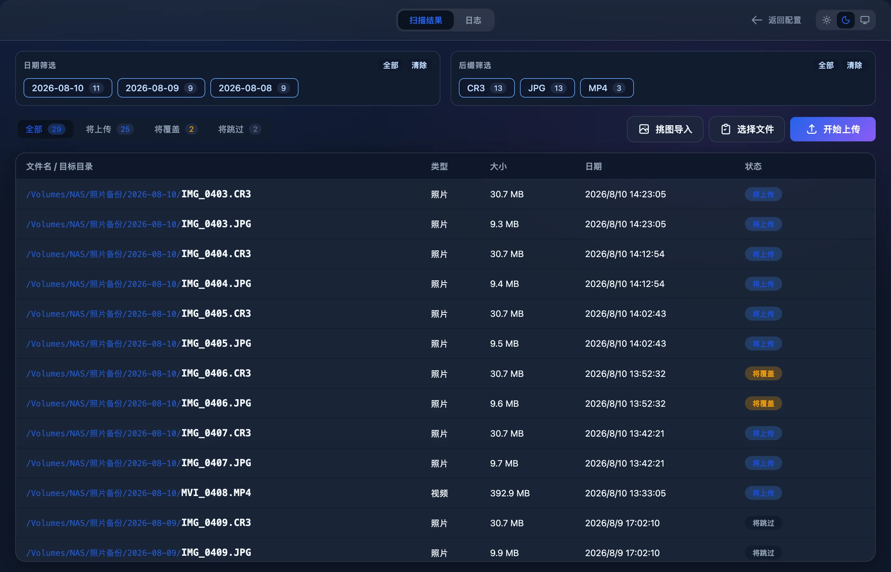
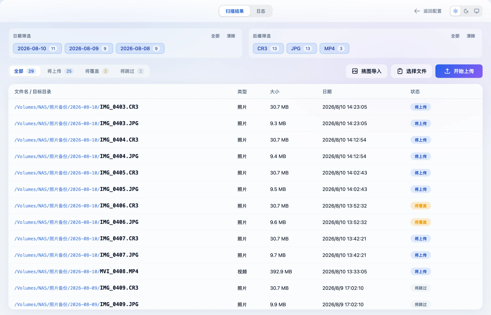
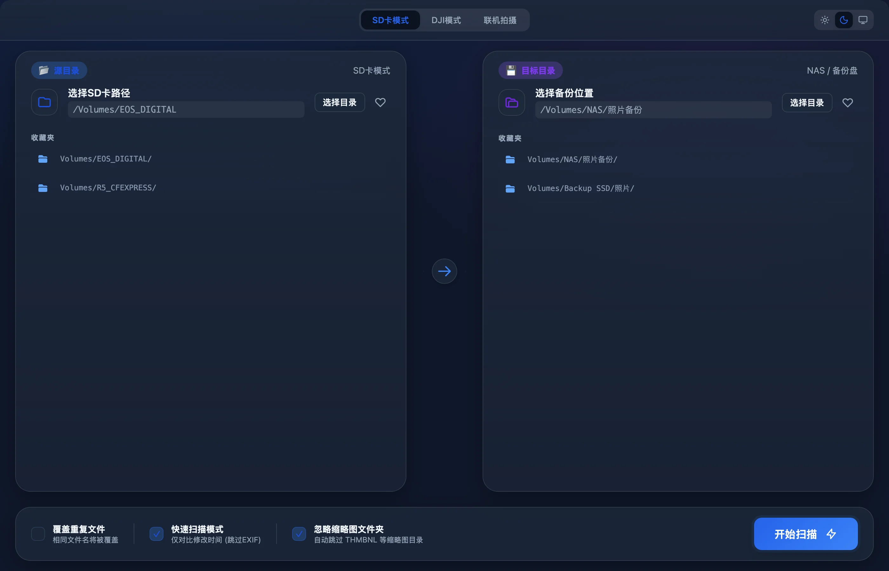
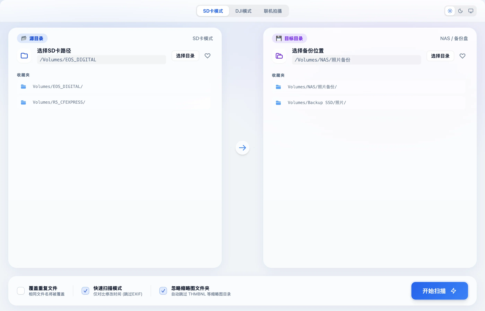
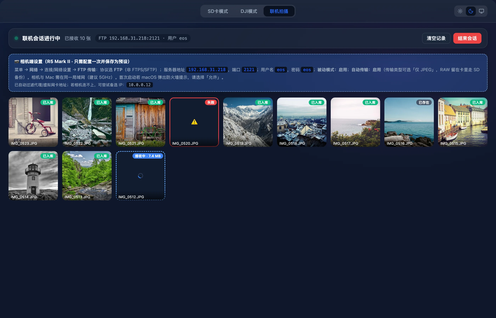
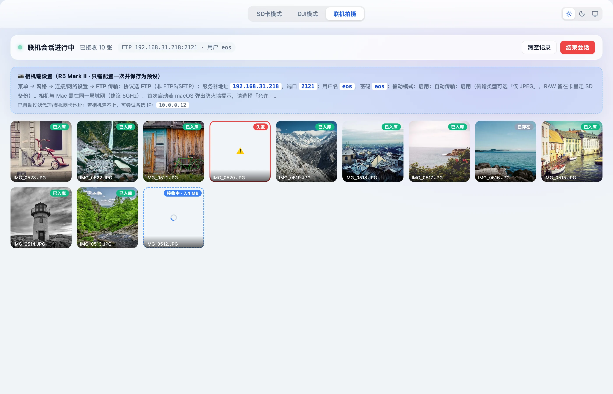
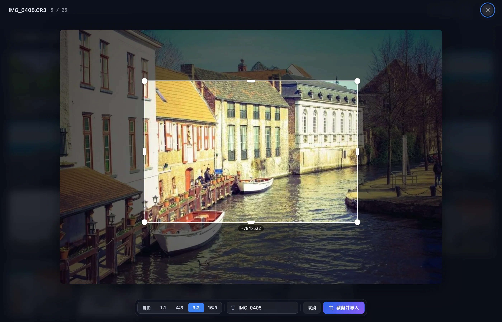

MasCopy · 给每天要倒卡的摄影师
大师拷贝
插上存储卡，照片和视频按拍摄日期整理进本地磁盘或 NAS。拷贝之前先告诉你每个文件去哪；同名文件按内容判重，从不静默覆盖。拍摄时让相机直接把照片传进来，挑好的图一键送进 Eagle。


一次倒卡
三步完成备份
选好存储卡和备份位置，先扫描看清楚，再开始拷贝。拷完可以直接推出存储卡，或者进入挑图。


选好来源和目标
左边选存储卡，右边选本地磁盘或已挂载的 NAS。常用路径点一下 ♥ 收进收藏夹，下次直接点选。SD 卡和大疆设备各记一套。
先扫描，看清每个文件去哪
读取照片 EXIF 与视频的创建时间，算出每个文件落在哪个日期目录。按日期、后缀筛选，也可以只勾选一部分上传。
拷贝，完成后推出存储卡
随时暂停、继续或取消，进度按字节算并估算剩余时间。全部完成后点「推出设备」；要挑图，点弹窗左下角的「⋯」，选「挑图导入 Eagle」。
归档与判重
按天归档，按内容判重
每个文件放进 目标/YYYY-MM-DD/，文件名保持原样。遇到同名文件，大师拷贝会逐字节比较内容，而不是只看名字和大小：内容相同就跳过，内容不同就自动改名，只有你明确打开「覆盖重复文件」时才会替换。
- 日期优先取照片 EXIF 的拍摄时间和视频容器里的创建时间，取不到再用文件修改时间。
- 同一批里两个同日同名的文件（例如来自两个 DCIM 子目录），第二个自动加
_1。 - 大疆素材连同 LRF 低清代理和 Osmo 360 的 OSV 一起归档。
/Volumes/NAS/照片备份/ ├─ 2026-08-09/ │ ├─ IMG_0409.CR3 新文件，将上传 │ └─ IMG_0411_1.JPG 同名不同内容，自动改名 └─ 2026-08-10/ ├─ IMG_0403.CR3 新文件，将上传 ├─ IMG_0406.JPG 内容相同，跳过 └─ MVI_0408.MP4 视频按创建时间归档
联机拍摄
按下快门，照片自己进 NAS
大师拷贝内置一个 FTP 服务器。相机连上同一个局域网，拍完的照片直接传过来，按日期入库，实时出现在照片流里。用 EOS Utility 联机时，也可以改成监听它的保存目录。
- 相机端怎么设置写在界面上：菜单路径、服务器地址、端口、账号，照着填一次存成预设。
- 传输先写进收件箱的暂存区，完整收到后才提交入库；传一半断了的文件不会混进图库。
- 备份位置暂时不可写（比如 NAS 掉线）会自动退避重试，恢复后接着入库。
- 监听模式永远不删除来源文件。


挑图
RAW 也能看，挑好直接送进 Eagle
备份完或联机时，点开照片放大看。RAW 和 HEIC 由 macOS 自带的 sips 转成预览，读进内存后立刻删掉临时文件，不留缓存。选好 Eagle 里的文件夹、填上标签，一键导入原图。
- 需要只要画面一部分时，框选裁剪：自由、1:1、4:3、3:2、16:9，选区旁实时显示像素尺寸。
- 裁剪用全分辨率原图完成，结果直接推给 Eagle，存储卡上不写任何文件，也不留下裁剪图。
- 方向键翻页，Enter 进入裁剪，Esc 退出。

不丢一张
拷贝过程出了意外，已有的文件也不会坏
倒卡最怕的是拔错卡、NAS 掉线、半截文件覆盖了好文件。这些情况大师拷贝都按最坏的打算处理。
每个文件先写成隐藏的临时文件，写完落盘再改成正式名字。中途失败或取消，临时文件自动删除。
发布新文件时如果目标已经存在，直接失败而不是盖过去。只有打开覆盖且内容确实不同，才会替换。
SD 卡和大疆素材只读不写，从不删除；监听模式也永远保留来源文件。
拔卡、NAS 掉线只记为那一个文件失败。重试时只处理没完成的，已完成的原样保留。
拷贝前核对源文件的大小和修改时间，拷贝中文件还在变大也会停下，提示重新扫描。
没有账号，不连云端。配置文件只有你自己能读，RAW 预览和裁剪都不留缓存文件。
支持格式
佳能、尼康、索尼的 RAW，大疆的视频
扩展名不区分大小写。以 . 开头的隐藏文件和 macOS 的 ._ 伴生文件一律跳过。
| 格式 | SD 卡 | 大疆 | 联机拍摄 |
|---|---|---|---|
| JPG / JPEG | ✓ | ✓ | ✓ |
| PNG、HEIC | ✓ | — | ✓ |
| RAW：NEF、CR2、CR3、ARW、DNG | ✓ | — | ✓ |
| HIF（佳能 HEIF） | — | — | ✓ |
| 视频：MP4、MOV | ✓ | ✓ | ✓ |
| 视频：AVI、M4V、3GP、MKV | ✓ | — | ✓ |
| CRM（Cinema RAW Light） | — | — | ✓ |
| LRF（大疆低清代理）、OSV（Osmo 360） | — | ✓ | — |
功能总览
五个章节，写到每一个开关
扫描、归档、判重、拷贝、推出
- EXIF 与视频创建时间定日期，归档到 YYYY-MM-DD
- 按日期、后缀筛选，勾选一部分上传
- 暂停、继续、取消，按字节算进度和剩余时间
- 部分失败时只重试没完成的文件
相机 WiFi 直传，或监听 EOS Utility
- 内置 FTP 服务器，界面上写好相机端怎么设
- 收件箱两段提交，重启后继续入库
- 实时照片流：接收中、已入库、已存在、失败
- 备份位置掉线自动退避重试
放大看 RAW，挑好就导入
- RAW、HEIC 也能放大预览，不留缓存
- 选 Eagle 文件夹、加标签，一键导入原图
- 五种比例裁剪，按全分辨率原图导出
- 方向键翻页，Enter 裁剪，Esc 退出
中断不留半成品，源文件从不动
- 临时文件写完落盘再独占发布
- 逐字节判重，比较期间两边都不能变
- 单个文件失败不拖累整批
- 全部本地运行，配置文件仅本人可读
一页查全格式、默认值与快捷键
- 三种模式各支持哪些扩展名
- 日期规则、目录格式与界面状态含义
- 端口、预览尺寸、重试间隔等默认值
- 系统要求与首次打开的放行方法
下载
装上，插卡就能用
大师拷贝 最新版
macOS 安装包（.dmg），Apple 芯片。
- 系统
- macOS。依赖系统自带的 sips、diskutil 等组件
- NAS
- 先在访达里挂载为可写目录
- Eagle
- 挑图导入需要 Eagle 正在运行并开启本地 API
- 联机
- FTP 直传需要相机与 Mac 在同一局域网，并在防火墙提示里允许
- 芯片
- 安装包适用于 Apple 芯片（M 系列）的 Mac
- 更新
- 4.1.0 起在应用里检查并安装新版本，见 应用内更新
第一次用
- 打开 .dmg，把「大师拷贝」拖进「应用程序」。
- 第一次打开时 macOS 会提示无法验证开发者（安装包未经 Apple 公证）。到「系统设置 → 隐私与安全性」底部点「仍要打开」；也可以在终端执行
xattr -dr com.apple.quarantine /Applications/大师拷贝.app。 - 插上存储卡，选「SD卡模式」或「DJI模式」，左边选卡上的目录，右边选备份位置。
- 点「开始扫描」，确认列表后点「开始上传」。